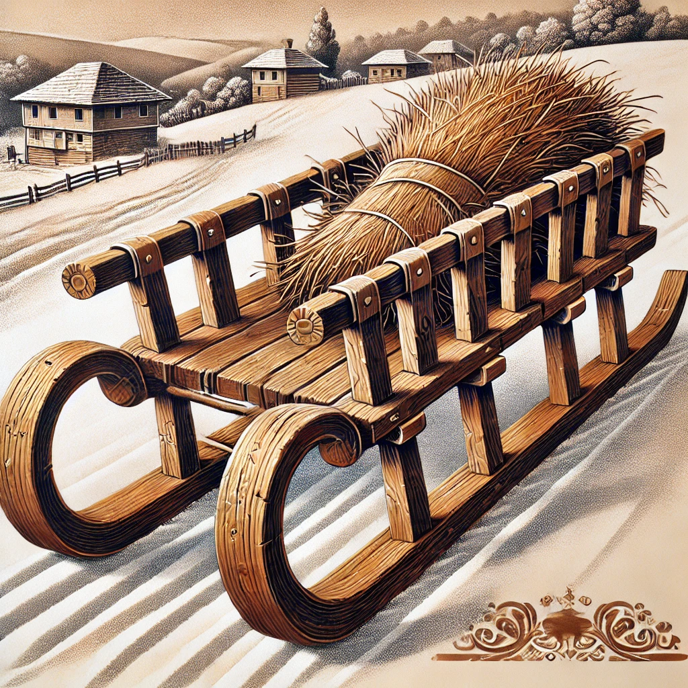
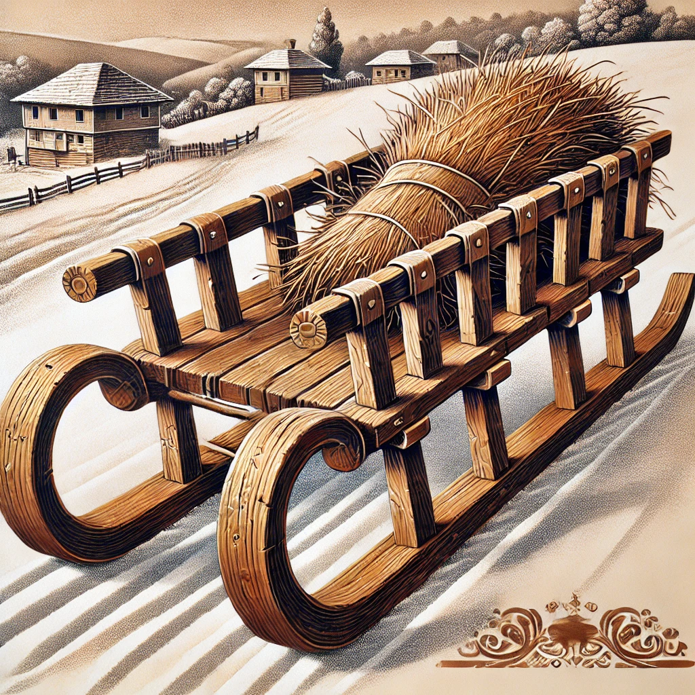
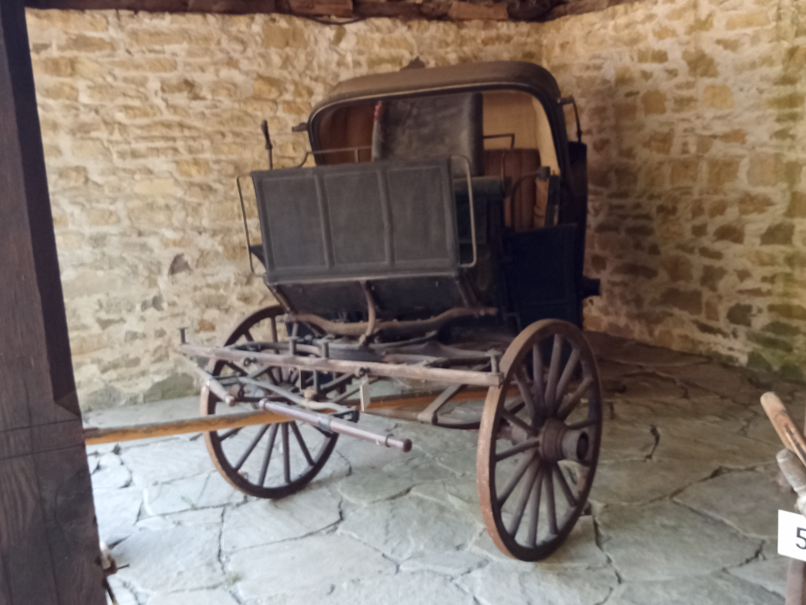
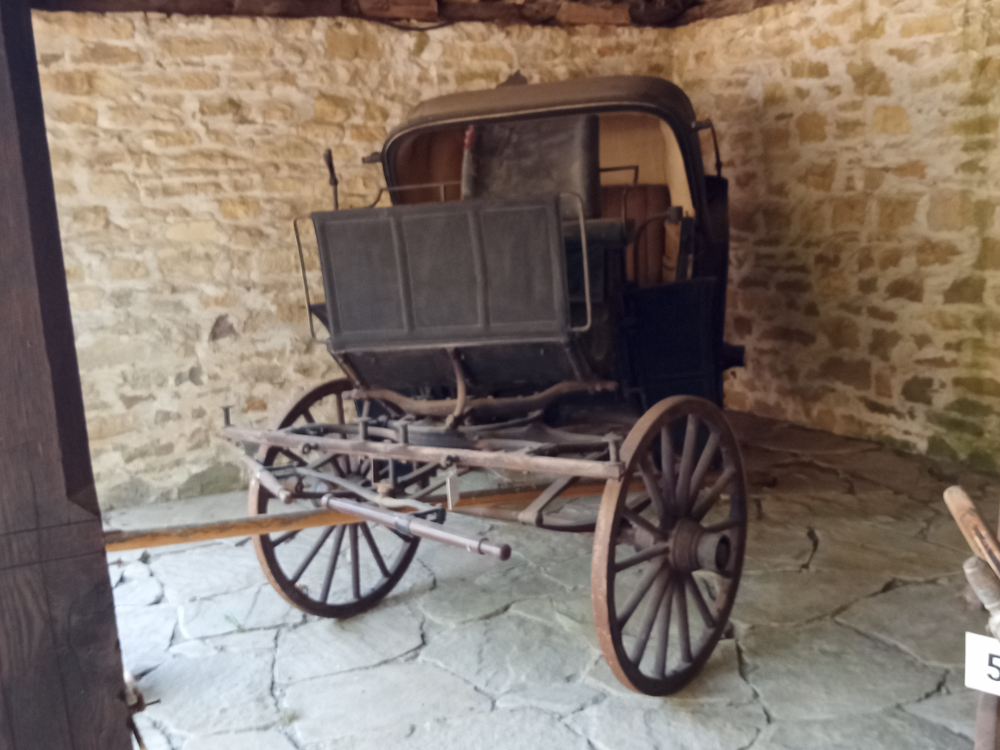
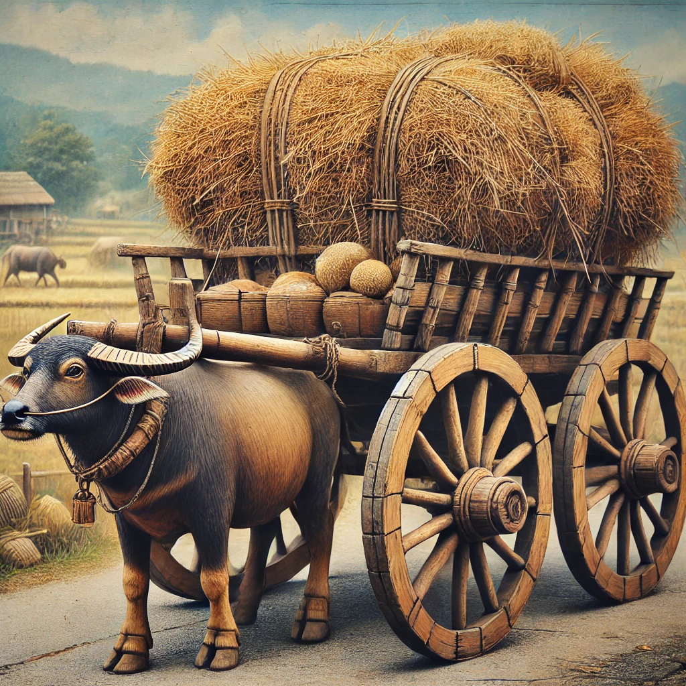
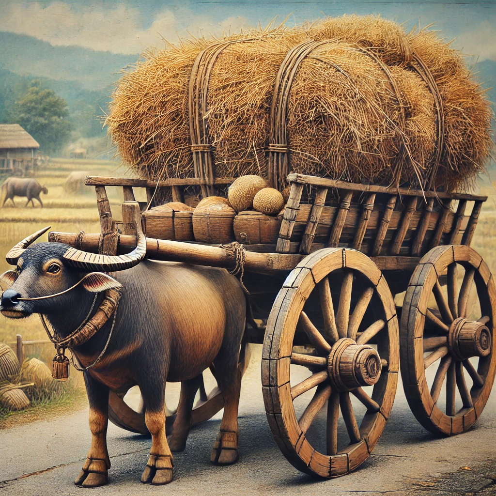

Превозни средства
 

Шейна
Изработена е през 1923 година в село Славейково, Габровско, е традиционно транспортно средство, използвано за пренасяне на снопи, сено и други селскостопански товари. Тази шейна е символ на местното занаятчийство и земеделския бит на региона.
Материали и изработка: Основната конструкция на шейната е направена от здраво дърво, най-често дъб или бук, заради тяхната здравина и издръжливост.
Плазовете: Те са изработени от естествено извито крушово дърво. Този материал е избран поради своята гъвкавост и устойчивост, което осигурява дълготрайност и добро приплъзване върху снега. Изработката е ръчна, с внимание към детайлите, за да се гарантира здравина и практичност.
Конструкция: Шейната разполага с две успоредни плаза, свързани със здрава рамка. Горната част е равна или леко вдлъбната, за да задържа товара на място по време на превоз.
Употреба: Използвана основно през зимата, когато движението с кола или други превозни средства е затруднено. Тя е незаменима за транспортиране на: Снопи: Слама, тръстика или други земеделски култури. Сено: За храна на добитъка.
 

 
